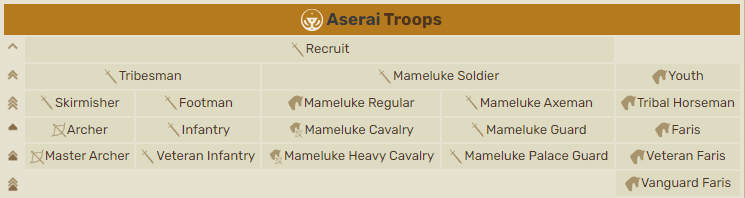
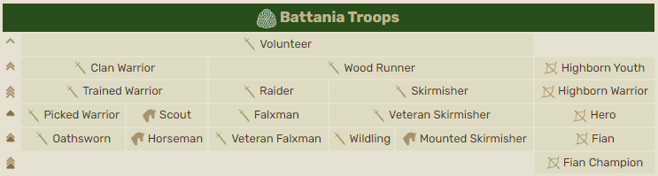
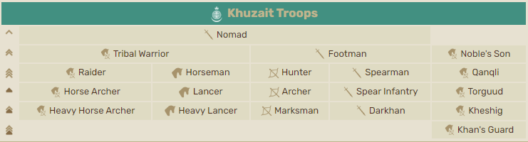

Mount & Blade 2: Bannerlord
Про гру

Mount & Blade II: Bannerlord — це стратегічна рольова відеогра, розроблена та опублікована TaleWorlds Entertainment і видана Prime Matter. Це приквел до Mount & Blade: Warband, окремого доповнення до гри 2008 року. Mount & Blade. Події Bannerlord розгортаються за 210 років до попереднього фільму, а події навіяні епохою переселення народів. Bannerlord було анонсовано в 2012 році. Сторінка Steam для гри була створена в кінці 2015 року; наступного року TaleWorlds почав випускати щотижневі щоденники розробників із детальним описом елементів гри. Версія гри з раннім доступом була випущена 27 березня 2020 року та швидко стала найбільшим запуском року в Steam, досягнувши майже 250 000 одночасних гравців у Steam. Гра була випущена для Microsoft Windows, PlayStation 4, PlayStation 5, Xbox One і Xbox Series X/S 25 жовтня 2022 року.
У ролику нижче ви можете подивитись трейлер цього доповнення :
Створення гри
Mount & Blade II: Bannerlord є довгоочікуваним продовженням популярної серії рольових і стратегічних ігор Mount & Blade. Розробку гри розпочав турецький розробник TaleWorlds Entertainment після виходу попередньої частини, Mount & Blade: Warband, у 2010 році. Оголошення про розробку Bannerlord було зроблено вперше ще в 2012 році, але реліз гри відклався на кілька років через різні технічні та творчі причини.
Розробка Bannerlord була досить довгою і складною. Команда розробників TaleWorlds займалася створенням гри протягом багатьох років, працюючи над вдосконаленням графіки, штучного інтелекту, системи бойових взаємодій та інших аспектів геймплею. Розробники вели активний діалог з фанатами гри, враховуючи їхні пропозиції та відгуки для покращення якості та глибини геймплею.
Офіційний реліз Bannerlord відбувся у весняному місяці 2020 року, після ряду бета-тестувань та додаткових поліпшень. Гра отримала велику увагу геймерів і стала однією з найочікуваніших релізів у світі відеоігор. Bannerlord отримала високі оцінки від критиків та гравців, визнаною за її глибокий геймплей, відкритий світ і можливості для кожного гравця побудувати свою власну історію у середньовічному світі.
У своєму ранньому доступі Bannerlord став найбільшим запуском року на той момент у Steam, досягнувши понад 170 000 одночасних гравців. Ще в ранньому доступі Кріс Бретт, який писав для Eurogamer, дав грі здебільшого позитивний відгук у статті під назвою «Bannerlord як біса, але я її дуже люблю». Він пише, що «Bannerlord може бути не завершено, і я підозрюю, що він не буде завершений протягом тривалого часу. Це може повторюватись і несправедливо, багато його систем ще не готові до нуля, і це нерідко бачити збій гри або ви зіткнетеся з якоюсь дивною помилкою на цьому шляху. Але в той же час, незважаючи на все це, це дуже весело. Фрейзер Браун для PC Gamer поділяє подібні почуття в статті під заголовком «Це не закінчено , він все ще дрімучий, але все одно блискучий".
У огляді Kotaku Ітан Гач повторює незавершений, але приємний геймплей. Він пише: «Дія незграбна, світ потворний... і оскільки це гра з раннім доступом, вона ще далека від повної конкретизації. І все ж, провівши кілька годин із грою, вона мене повністю захопила IGN також дав грі здебільшого позитивний відгук. У своїй статті Ліана Хафер пише, що «для гри з раннім доступом вона амбітна та досить добре відшліфована, навіть якщо їй ще попереду довгий шлях».
Геймплейні особливості
Mount & Blade II: Bannerlord — рольова гра-стратегія/екшн. Основна передумова ігрового процесу така ж, як і в попередніх записах серії: гравець створює групу солдатів і виконує квести на верхній карті кампанії, при цьому битви відбуваються на полях битв, що дозволяє гравцеві особисто брати участь у бою разом із своїми військами. . Bannerlord, однак, містить значні покращення багатьох елементів ігрового процесу.
Облоги в Bannerlord мають бути більш стратегічними, ніж у Warband. Гравець може побудувати різноманітні облогові машини та стратегічно розташувати їх перед початком бою, щоб націлити на певні ділянки ворожих укріплень. На верхній карті кампанії гравець може вибрати бомбардування стін, можливо, створюючи проломи, які можна використовувати, коли почнеться битва. Щоб запобігти тривалим бомбардуванням на карті бою, під час реальної битви можна знищити лише мерлони, ворота та облогові машини. Дизайн замків і міст, що обороняються, спрямований на користь захисників; наприклад, отвори для вбивства часто розташовані в ключових точках перекриття, що дозволяє захисникам вбивати велику кількість нападників, перш ніж вони зможуть пробити ворота.
Bannerlord має численні покращення стосунків між персонажами. Гравець може використовувати більш просунуту систему діалогу, щоб спробувати переконати неігрових персонажів робити те, що вони хочуть. Під час розмови з персонажем гравець повинен заповнити індикатор прогресу, успішно висуваючи його аргументи; якщо смужка заповнена, персонаж піддасться гравцеві. Якщо персонаж не піддається лише чарівності, гравець може використати ігрову систему обміну, щоб спробувати підкупити персонажа; ця система також використовується для регулярних транзакцій між гравцем і торговцями. Якщо гравець неодноразово не вдається переконати персонажа, угода може стати неможливою, і це може негативно вплинути на стосунки між ними. Систему переконання також можна використовувати для залицяння та одруження з персонажами. Хоча Warband дозволяв персонажам одружуватися, у Bannerlord гравець також може мати дітей від своєї дружини. Якщо персонаж гравця помирає, один із його дітей може успадкувати своїх солдатів і володіння і стати новим персонажем гравця.
Bannerlord, як і Warband, має багатокористувацький компонент, який дозволяє гравцям вступати в бої один з одним на різних картах і в режимах гри. Як і в Warband, багатокористувацька гра в Bannerlord обмежена битвами та відокремлена від кампанії, хоча розробники висловили зацікавленість у додаванні багатокористувацької гри до кампанії через вміст, який можна завантажити після випуску. Bannerlord використовує систему класів, яка дозволяє гравцям вибирати, за якого типу солдата вони хочуть грати. Класи поділяються на три категорії: піхота, дистанція та кавалерія. Кожен клас має позитивні та негативні елементи, на які впливають позитивні та негативні елементи його фракції загалом. Гравці обирають класи за системою балів, яка замінює грошову систему Warband.
Населені пункти:
На відміну від свого попередника, Bannerlord прагне створити кращу атмосферу життя у своїх містах і селах. У селах, як правило, спостерігається більше активності, завдяки покращеному ШІ-пошуку, щоб NPC виглядали менш схожими на ШІ. Навіть підлітків і дітей можна побачити серед дорослих, і вони використовують різні базові моделі замість того, щоб бути зменшеними дорослими, як у Viking Conquest. Тварин, таких як кури, також можна побачити, як бродять. Міські сцени також показують більше активності, з набагато більшими містами, ніж у попередніх назвах. На виставці представлено набагато більше різноманіття структур і стилів. Атмосфера таверн значно покращилася, коли NPC активно п’ють та розмовляють один з одним, а також гуляють. Музиканти також гратимуть музику, пов’язану з культурою міста.
Коли ранній доступ був випущений, у багатьох містах, замках і селах були відсутні сцени, зокрема таверни, тронні зали та арени. Taleworlds заявив, що з часом це буде виправлено, і кожне місто, замок і село, а також будівлі в них матимуть власні унікальні сцени.
Обладунки та одяг: Одяг також було змінено, додано окремий слот для плечової/задньої броні (забезпечує додаткову броню для рук і тіла), а також кінської броні окремо від типів коней. Bannerlord також представляє концепцію окремого «цивільного» спорядження, що обмежує можливість носити бойове спорядження у великих поселеннях, але також забезпечує окреме спорядження для налаштування для цих сценаріїв.
Зброя та бій: Поведінку зброї було оновлено до більш фізичного підходу, який використовує фізичні властивості зброї для розрахунку таких статистичних даних, як швидкість і пошкодження. Основними фізичними властивостями зброї є її довжина, маса і розподіл ваги. На основі цих властивостей швидкість обертання та поштовху зброї розраховуються за допомогою спрощеної моделі, заснованої на статті Джорджа Тернера. Ця нова система замінює старий метод Warband для розрахунку бонусу за швидкість. Подібно до Warband, тип пошкоджень поділяється на три категорії: тупі, пронизливі та різані, причому тупі є найкориснішими проти броні, а різання – найменш корисними. Як і раніше, булави надають невід’ємний бонус у здатності порушити позицію цілі в разі успішного удару. Деякі древкові зброї, такі як Білл, іноді можуть вражати ворогів, які парирують зброєю (залежно від точної позиції двох бійців). Однак, щоб пробити блок щита, потрібен певний перк від навичок персонажа; Це вже не притаманне певній зброї. Виготовлення зброї — нова функція. Коли гравець створює нову зброю та переплавляє знайдену, він має шанс відкрити унікальні деталі, які потім можна застосувати до нової зброї, змінюючи її статистику та зовнішній вигляд. Як приклад, частини меча, які можна виявити, це леза, хрестовини, рукояті та навершя. Цей процес потребує ресурсів, придбання яких може бути дорогим, але виплавку та очищення можна використовувати, щоб отримати необхідні матеріали зі здобичі, яку знайде гравець.
Сюжетна складова гри
Дія Mount & Blade II: Bannerlord розгортається на вигаданому континенті Кальрадія, за 173 роки до Mount & Blade: Warband, під час занепаду імперії Калрадик і формування попередників фракцій, які з’являються у Warband. Падіння Кальрадської імперії аналогічно падінню Римської імперії під час періоду переселення народів і формування територій Близького Сходу, Північної Африки та Європи в ранньому середньовіччі. Обладунки, одяг, зброя та архітектура кожної фракції натхненні їхніми реальними аналогами з 600 по 1100 рік нашої ери.
Список основних наративних квестів:
- Розслідувати «дурість Нерецесa»
- Зберіть прапор дракона
- Відновіть свій клан
- Знайти імперську фракцію або Знайти неімперську фракцію
- Підтримайте імперську фракцію або Підтримайте неімперську фракцію
- Об'єднайте Ымперію або Послабте Імперію
- Змова Аразагоса та Змова Істініани
Королівства
Королівства, присутні в Bannerlord, є предками королівств Warband і мають деякі риси королівств їхніх нащадків. У кожному королівстві є кілька знатних кланів, які правлять і управляють власними містами та селами, а також мають власні замки. Крім того, є менші, другорядні фракції, схожі на бандитів і клани найманців, з якими гравець може взаємодіяти під час дослідження Імперської Калрадії.
Султанат Асерай
Султанат Асерай — це королівство в Mount&Blade II: Bannerlord, яким править Султан Ункід, і займає береги та пустелю за Перським морем, на південь нижче континенту Кальрадія. Бану Асера, також відома як Асера, — це цивілізація, яка складається з численних кланів, які стверджують, що вони походять від легендарного патріарха Асери. З давніх часів клани заселяли джерела, оазиси та поселення на узбережжі пустелі Нахаса та її прилеглих територій. Послаблення Імперії дало шанс кланам, які створили конфедерацію в інтересах завоювання.
Асераї пишаються своєю гнучкістю, а їхні армії є найближчими до узагальненої фракції в Bannerlord, з досить збалансованим поєднанням лучників, піхоти та кавалерії із середнім списом, хоча найбільше уваги приділяється кавалерії. З сильними торговельними традиціями їхні каравани на 30% дешевші у будівництві з 10% зниженням торгових штрафів.
Асераї є предками Сарранідського султанату з Mount&Blade: Warband. За 200 років Бану Сарран витіснив Асераї зсередини і став Сарранідським Султанатом.
Султанат Асерай:
Історія:
На південь від центру імперії лежить Нахаса, Бронзова пустеля, оточена горами, вибита сонцем. Мандрівник, який прямує через перевали з зеленіших земель, спочатку побачить поля дюн, розбиті гравійними рівнинами та виходами вулканів, що мерехтять під спекою. Але є вода, яку можна знайти під землею, потрапивши в западини або під ваді, де час від часу пролітає раптова повінь. Саме в цих оазисах оселилися люди. Вони поділяються на десятки кланів і підкланів, кожен зі своєю складною генеалогією, але спільно відомі як Бану Асера або Асераї на честь легендарного патріарха Асери, якого всі вони вважають предком.
Клани:
Бану Хульян • Бану Сарран • Бану Кілд • Бану Караз • Бану Арбас • Бану Атжі • Бану Сармал • Бану Хаббаб • Бану Рувайд
Територія:
Територія починається з наступних Міст, Замків та Сіл:
- Міста: Аскар • Хуб’яр • Хусн Фулк • Іякіс • Касіра • Куяз • Разіх • Санала
- Замки: Замок Айн Балік • Замок Баріхал • Замок Джамайе • Замок Медені • Замок Сахель
- Села: Abba • Abghan • Abou Khih • Ain Baliq • Asmait • Baq • Barihal • Bir Seif • Bunqaz • Дейр Хава • Дока • Езбет Нахул • Фанаб • Хамошават • Гіблет • Хокка • Хунаб • Джахасім • Джамайе • Кафр Хатіф • Кука • Ламеса • Лівас • Мабваз • Махлул • Медені • Міджаїт • Муссум • Нахлан • Каблаб • Кіднар • Сахель • Шибал Зумр • Тамнух • Ташеба • Тубіліс • Укба • Вадар • Валтас • Залм
Армія:
Новобранці та члени племен Асераї більш крихкі, ніж піхота нижчого рівня в інших культурах, але після покращення вони стають більш гнучкими та надійними універсалами. Більшість підрозділів Aserai повною мірою використовують свої слот для спорядження, маючи древкову зброю, клинок, щит і метальну зброю. Це дає їм змогу прикрашати наступаючу піхоту противника снарядами перед вступом у ближній бій і захищатися від ворожої кінноти з близької відстані. Сили Асераї набагато слабші в обороні, оскільки їхні ненадійні щити та відверто жахливий захист голови більшості військ дуже ускладнюють захист від дальніх атак або ударної піхоти ворога.
Кавалерія асераїв є всебічною та збалансованою, але гравець повинен взяти до уваги, що доступ до бойових коней потрібен, щоб якнайкраще використовувати їх. Регулярні війська мамелюків і молоді асераї в кращому випадку можна вважати легкою кавалерією, і доки їх не навчать і не спорядять бойових коней, вони погано підготовлені проти більшості загроз середнього рівня. Зрештою регулярні мамлюки повністю трансформуються після підвищення до мамлюкської кінноти, оскільки вони екіпірують луки та стріли, а їхні війська за замовчуванням змінюються на кінного лучника. Після того, як молодь Асераї та Вершники оновлені до Асераї Фаріс, гравець отримує доступ до стилю гри, ексклюзивного для кавалерії, якщо він цього бажає, подібного до кінного війська Хузаїта, якщо він не перевершує його.

Королівство Баттанія
Королівство Баттанія — це королівство в Mount&Blade II: Bannerlord, яким править верховний король Каладог, і воно займає лісисті землі на північному заході континенту Кальрадія. Баттанська цивілізація складається з слабо організованих кланів, які спочатку населяли більшу частину Кальрадійського континенту, але були зведені до невеликої кишені вільної території після того, як більшу частину їхньої землі було завойовано розширенням Кальрадійської імперії.
Особливості батанської культури воїнів включають лісову війну, стрільбу з довгого лука та дворучне мечництво. На карті надземного світу баттанські армії матимуть на 50% менше штрафу за швидкість, рухаючись лісами.
На час Mount and Blade: Warband через 200 років Баттанія більше не існує як об’єднана цивілізація, уся її територія була завойована, а її населення асимільовано до свадської та родокської культур, де деякі з них стали жити як гірські бандити, як видно з їхній спільний одяг.
Позиція Баттанської нації порівняно з Warband знаходиться в замках Рейвадін, Кнударр і Радогір та навколо них. Але ліси та руїни розповідають про колись горду лісову націю.
Королівство Баттанія:
Історія:
«На туманних пагорбах північно-західної Кальрадії домінують клани Баттанії, корінні жителі більшої частини континенту. Їхні фортеці на вершинах пагорбів стали свідками незліченних війн, які велися, щоб протистояти зовнішнім загарбникам: спочатку легіонам Імперії, а нещодавно повстанню Стургійське та Фландське королівства. Вони майстри володіння довгим луком, нічними набігами, раптовим шаленим нападом із лісу. Вони обожнюють хоробрість, але особливо люблять її змішувати з невеликою кількістю пустощів — злодія худоби, який може вибити ціле стадо. у туман; чемпіон, який обідає з ворогуючим племенем і, потішивши своїх господарів анекдотом про битву, дістає зі свого мішка череп одного з їхніх родичів, який він узяв як сувенір».
Баттанські лорди розповідають нам, що попередній верховний король Баттанії, Верховний король Еріл, зник.
Крім того, Енциклопедія розповідає нам трохи більше про Баттанію. Ми дізнаємося про існування «старої батанської мови». На сторінці для Кантрека ми дізнаємося, що село є одним із найпівденніших регіонів Кальрадії, де досі розмовляють цією мовою, підкреслюючи велику кількість території, втрачену батаніанцями в минуле. Оскільки Кантрек розташований на південь від більшої частини Баттанії, ймовірно, що більшість жителів Баттанії все ще розмовляють мовою Баттанії.
Клани:
фен Груффендок • фен Дернґіл • фен Увайн • фен Ґіал • фен Ейнгал • фен Моркар • фен Пенрайс • фен Кайрнахт
Територія:
Територія починається з наступних Міст, Замків та Сіл:
- Міста: Кар Бансех • Дунгланіс • Марунат • Пен Каннок • Сеонон
- Замки: Замок Аб Комер • Замок Астер • Замок Друіммор • Замок Флінтолг • Замок Лланок Хен • Замок Пендраік • Замок Ремтоіл • Замок Утелайм
- Села: Аб Комер • Андрун • Астер • Аф Кафал • Беглумар • Бог Беф • Брін Гласс • Кантрек • Клейг Бан • Далменгус • Діантогмайл • Друіммор • Дурн • Еберет • Фенон Трин • Флінтолг • Ґайнсет • Геунат Нал • Глетінріг • Глінтор • Імлах • Інвех • Ліндорн • Лланок Хен • Маг Арба • Ремтойл • Сеордас • Швейрін • Тор Лейд • Тор Меліна • Ухлейм
Армія:
Війська Баттані дуже спеціалізуються на бойових діях, зосереджених на піхоті. Їм може бути важко впоратися з супротивною важкою кіннотою в поєднанні з кінними лучниками, але вони сильніші проти повільніших ворогів, які воюють пішки. Захист своїх фіанських чемпіонів важливий для батаніанських сил, оскільки ці елітні лучники здатні самостійно знищити цілі загони, якщо їм нададуть шанс, але все одно можуть стати приголомшеними, коли їх оточує ворожа кавалерія. Вони повинні бути особливо добре прикриті проти швидких мамелюків-асераїв, які можуть брати участь у ближньому бою з мечем і щитом, якщо необхідно, та іншої швидкохідної кінноти з потенціалом для ближнього бою чи метання зброї.
Присягнули і Дикі — пікінери, здатні брати щуку. Ця здатність має вирішальне значення в батанійській бойовій стратегії; створення двошеренгових піхотинців для захисту фіанців і наказ їм використовувати лише холодну зброю змусить їх підтягнути піхотинці та забезпечити бажаний захист для ваших військ фіанців. Доповніть ці щукі шильтрони рядами Фальксменів у тилу, які розіб’ються із залишками ворожої кавалерії, коли її зупинять і знищать. Оскільки батанська піхота володіє різноманітною метальною зброєю, вона здатна запускати змішані залпи снарядів проти наступаючої піхоти чи кавалерії, захищаючи своїх цінних лучників. Гравці, які виступають проти батаніанців, повинні уникати нападів на кинуті списи та сокири, а також уникати контакту зі своїми фальксменами, які можуть легко простягнути руку й збити верхового вершника своїми довгими лезами. Баттанських вершників також не можна недооцінювати, оскільки, хоча вони набагато слабші за кінноту інших народів, їхні довгі списи та потужні списи можуть сильно вдарити в ідеальних умовах.

Хузаїтське ханство
Хузаїтське ханство — це королівство в Mount&Blade II: Bannerlord, яким править Мончуг-хан, і воно займає східні луки та степи за межами континенту Кальрадія. Народи хузаїтів колись були кочовими племенами, які кочували східними кордонами імперії Кальрадик, поки загрози з подальшого сходу не змусили їх об’єднатися в ханство під проводом Урхуна Хузаїта. Це ханство перебралося на погано захищені східні землі імперії та завоювало їх. Згодом ці кочові племена осіли в захоплених ними містах і селах.
Військова війна легкої кінноти - улани, і особливо манера верхового стрільця - є військовою спеціальністю хузаїтів. Їхній культурний бонус робить оновлення до цих військ на 10% швидшим. Крім того, виробництво овець, корів, мулів і коней у селах збільшується на 25%, коли село належить лорду Хузаїт.
У Mount & Blade: Warband, дія якого розгортається через 200 років після подій у Bannerlord, Хузаїтське ханство було узурповано зсередини незначним кланом Хергітів. До цього моменту ханство підкорило більшу частину території, яка раніше належала Імперії та Стургії.
Хузаїтське ханство:
Історія:
За століття до початку Bannerlord Імперія Calradic простягалася аж до кордону Великого Трав'яного моря. Прикордонні степові племена, до яких належали хузаїти, начагани, аркити, хергити, карахузаїти, були роз'єднані. Імперія змогла підтримувати ворогування між племенами, підкуповуючи вождів і вбиваючи ханів, які зміцнювали владу.
Однак, за два покоління до початку Bannerlord, степові племена з далекого сходу рушили на захід до Імперії. Опинившись між молотом і ковадлом, прикордонні племена об’єдналися в конфедерацію під проводом Урхуна Хузаїта. Ця конфедерація зросла завдяки завоюванню та набігам на найсхідніші території Імперії. Із завойованих міст і земель стягувалися податки й мита. Згодом Конфедерація стала називатися ханством.
Урхун керував Хузаїтським ханством із верховною владою, не дозволяючи васалізованим кланам здійснювати набіги або оголошувати війну без його згоди. Такий осілий і більш звичайний спосіб життя не влаштовував деякі більш некеровані клани, такі як Карахергіти. Після смерті Урхуна продовжували правити його нащадки. Однак багато кланів вважали, що вони повинні правити ханством.
Клани:
Урхунайт • Хергіт • Аркіт • Балтайт • Харфіт • Колтіт • Тигріт • Янсеріт • Обурит
Територія:
Територія починається з наступних Міст, Замків та Сіл:
- Міста: Аккалат • Балтаханд • Чайканд • Макеб • Одох • Ортонгард
- Замки: Замок Акісер • Замок Дінар • Замок Ерзенур • Замок Хаккун • Замок Кайсар • Замок Хімлі • Замок Сіміра • Замок Тепеш • Замок Усек
- Села: Акісер • Асаліг • Данара • Динар • Ерзенур • Есме • Фіснар • Гереден • Хаккун • Ханехі • Іспантар • Карахаллі • Каракалат • Кайсар • Кіраз • Кохі Аджик • Мазен • Міванджан • Омроток • Пабастан • Паям • Рансам • Шапеште • Сіміра • Тісмірр • Улаан • Урунджан • Усек • Охутан
Армія:
Оскільки партії, що базуються на Хузаїті, можуть сильно покладатися на кавалерію, вони мають пристойну стратегічну мобільність на карті кампанії. Однак тривалі вторгнення на територію ворога можуть позбавити їх додаткових коней, щоб так чи інакше перевозити їхні повільніші піші війська, з часом дещо зменшуючи мобільність. Таким чином, бойова група хузаїтів може швидко просунутися до бажаної позиції, але їхній відступ може бути повільнішим. Цим можуть скористатися супротивники, які вступають у бій з кінними силами Хузаїтів на пересіченій місцевості, де їх кавалерія не може ідеально маневрувати. Незважаючи на це, зазвичай немає причин для хузайтських вершників спішуватися з коней і битися пішки, оскільки стадо степових коней добре збалансоване щодо здоров’я та маневреності, а висока майстерність верхової їзди хузайтських вершників дозволяє їм використовувати своїх верхових коней із достатньою ефективністю навіть у складних умовах. рельєф місцевості.
У імітованих битвах чиста сила кінноти Хузаїт має бути більшою, ніж зрівнятися з арміями інших королівств, принаймні на відкритому полі. У боях із невідповідною місцевістю й облогою, а також у битвах у реальному часі, де гравець, який протистоїть кінноті Хузаїтів, може перешкодити їхній пересуванні, партії Хузаїтів можуть досягти набагато гірших результатів, ніж більш збалансовані сили. Хузаїтські улани та кінні лучники все ще можуть бути достатньо здатними бійцями в облогових битвах, тому гравцям не потрібно покладатися на свою піхоту лише для захисту володінь, якщо вони мають доступ до необхідного запасу верхових коней. Гравці також можуть скористатися можливістю, здавалося б, сильнішого ворожого гарнізону вилазити під час облоги, зменшуючи неефективність Хузаїта у захопленні володінь, вступаючи з гарнізоном у відкритий бій замість облогового бою.

Північна Кальрадична імперія

Північна Кальрадична імперія — це королівство в Mount&Blade II: Bannerlord, яким править Лукон Остікос, впливовий сенатор і аристократ, який хоче, щоб Сенат відновив своє право призначати нового імператора. Вони, як і дві інші імперії (Південна та Західна імперії Кальрадиків), спеціалізуються на броньованих катафрактах і вмілих лучниках. Північна імперія має спільний кордон з Баттаніанцями, Стургійцями та Хузаїтами, а також з двома іншими державами, що відкололися в результаті розколу Кальрадської імперії.

Північна Кальрадична імперія:
Історія:
Кальрадська імперія не є монархією. На цьому наполягають кальрадіанці. Імператор, який раніше був лише військовим командиром, можливо, також взяв на себе більшість інших державних справ. Замість того, щоб кожні кілька років обирався Сенатом, він тепер може правити довічно і часто його наступником буде його син. Народні збори, які колись вирішували ключову політику, можливо, зникли, а Сенат, зібрання землевласників, може мати набагато менше влади, ніж це було в минулі століття. Але це не монархія, тому що кальрадійцям категорично заборонено правити королем. Імперія — це те, що відбувається, коли ліга міст-держав завойовує континент. Громада, яку колись очолювали вільні фермери з відносно однаковим багатством, тепер має величезну прірву між багатими та бідними. Інституції, покликані запобігти тому, щоб одна людина стала тираном, вступають у протиріччя з потребами безперервної війни, яка потребує єдиного командування. Без будь-яких плавних засобів престолонаслідування смерть імператора завжди була потенційною кризою. Зазвичай імператор призначав спадкоємця, сенат затверджував його вибір, а народ (мається на увазі військо) схвалював його. Але це не завжди відбувалося гладко, і спадкоємство часто вирішувалося на полі бою. Нинішній конфлікт, який спалахнув після вбивства покійного імператора Аренікоса, є останньою з цих імперських громадянських війн.
Клани:
Остикос • Нерецес • Аргорос • Імпесторес • Долентос • Хоніс • Фалентес • Ватацес • Серапід
Територія:
Територія починається з наступних Міст, Замків та Сіл:
- Міста: Ампрела • Аргорон • Діахма • Епікротея • Музея • Санеопа
- Замки: Замок Атаконія • Замок Атріон • Замок Гаос • Замок Епіноза • Замок Лочана • Замок Мекаловея • Замок Ресос • Замок Сіратос • Замок Варагос
- Села: Еорія • Агалмон • Алатіс • Алосея • Атаконія • Атріон • Авасінтон • Бореагора • Кріос • Діопаліс • Епіноза • Енойса • Гаос • Гімос • Гетанія • Єракос • Лохана • Маратея • Масангара • Мекаловея • Нортаніса • Ортра • Понс • Потаміс • Резос • Самата • Статімос • Сіратос • Темхем • Феміс • Варагос • Веалос
Політика: Північна імперія є втіленням олігархічного сенату, який зібрався до сенатора Люкона після того, як Гаріос і Рагея заявили про свої права на титул імператора через їхні зв’язки в армії та аристократії відповідно. Більшість кланів цієї фракції нібито є стародавніми родовідами з давнім корінням у Сенаті — і, таким чином, ця третина Імперії є більш традиційною та консервативною за своєю природою, віддаючи перевагу верховенству Сенату над Імператором і побоюючись розколу громадянської війни, який свідчить про роздуту владу імператора. Сенат стверджує, що занепад Імперії є наслідком надзвичайно могутніх імператорів, які не несуть відповідальності перед своїми виборцями, і розглядає Гаріоса та Рагею як наслідки цих монархічних тенденцій. Лукон стверджує, посилаючись на старі звичаї Імперії, що «без [нашого] закону, без писаного слова є лише тиранія та натовп».

Південна Кальрадична імперія

Південна Кальрадична імперія — це королівство в Mount&Blade II: Bannerlord, яким править Рагея Петрос, вдова імператора Аренікоса, яка претендує на трон для своєї дочки Іри, єдиної дитини покійного імператора. Вони, як і дві інші імперії (Північна та Західна імперії Кальрадиків), спеціалізуються на броньованих катафрактах і вмілих лучниках. Південна імперія має спільний кордон з Асераї та Хузаїтами, а також з двома іншими державами, що відкололися в результаті розколу Імперії Кальрадиків.

Південна Кальрадична імперія:
Історія:
Кальрадська імперія не є монархією. На цьому наполягають кальрадіанці. Імператор, який раніше був лише військовим командиром, можливо, також взяв на себе більшість інших державних справ. Замість того, щоб кожні кілька років обирався Сенатом, він тепер може правити довічно і часто його наступником буде його син. Народні збори, які колись вирішували ключову політику, можливо, зникли, а Сенат, зібрання землевласників, може мати набагато менше влади, ніж це було в минулі століття. Але це не монархія, тому що кальрадійцям категорично заборонено правити королем. Імперія — це те, що відбувається, коли ліга міст-держав завойовує континент. Громада, яку колись очолювали вільні фермери з відносно однаковим багатством, тепер має величезну прірву між багатими та бідними. Інституції, покликані запобігти тому, щоб одна людина стала тираном, вступають у протиріччя з потребами безперервної війни, яка потребує єдиного командування. Без будь-яких плавних засобів престолонаслідування смерть імператора завжди була потенційною кризою. Зазвичай імператор призначав спадкоємця, сенат затверджував його вибір, а народ (мається на увазі військо) схвалював його. Але це не завжди відбувалося гладко, і спадкоємство часто вирішувалося на полі бою. Нинішній конфлікт, який спалахнув після вбивства покійного імператора Аренікоса, є останньою з цих імперських громадянських війн.
Клани:
Петрос • Леоніпардес • Местрікарос • Гонгерос • Хуліос • Візартос • Авлон • Прієнікос • Ветраніс
Територія:
Територія починається з наступних Міст, Замків та Сіл:
- Міста: Данустика • Лікарон • Оніра • Фікаон • Порос • Сіронея • Вострум
- Замки: Замок Ханопсіс • Замок Коренія • Замок Йогуріс • Замок Лавенія • Замок Меліон • Замок Моренія • Замок Одриса • Замок Сестадейм
- Села: Alision • Amycon • Atphynia • Avalyps • Caira • Canoros • Canterion • Chanopsis • Corenia •Erebulos • Ethemisa • Eunalica • Gorcorys • Jogurys • Lanthas • Lartusys • Lavenia • Melion • Metachia • Morenia • Odrysa • Parasemnos • Polisia • Popsia • Psotai • Sagolina • Sagora • Saldannis •Sestadeim • Spotia • Tegresos • Tevea • Vargonis • Zestea
Політика: Північна імперія є втіленням олігархічного сенату, який зібрався до сенатора Люкона після того, як Гаріос і Рагея заявили про свої права на титул імператора через їхні зв’язки в армії та аристократії відповідно. Більшість кланів цієї фракції нібито є стародавніми родовідами з давнім корінням у Сенаті.

Князівство Стургія

Князівство Стургія — це королівство в Mount&Blade II: Bannerlord, яким править Великий принц Раганвад і займає засніжені найпівнічніші гірські території континенту Кальрадія. Історія князівства почалася, коли скандинавські торговці та авантюристи мігрували з північно-східних територій у пошуках землі та багатства, і зрештою уклали дипломатичні та шлюбні союзи з корінними племенами Стургії, об’єднавши дві культури у щось нове, з жорстоким, войовничим, але також меркантильний менталітет.
Важкоброньована піхота з товстими щитами, що утворюють захисну стіну, є ядром стургійської армії, хоча також помітно задіяні загони кавалерії та лучників. Їхній культурний бонус зменшує витрати на покращення та наймання піхоти на 25%. Крім того, їхні армії втрачають на 20% менше згуртованості щодня. Їхнє культурне покарання полягає в тому, що стосунки псуються на 20% більше, коли вони спростують рішення королівства.
Через 200 років у Mount&Blade: Warband Стургійська імперія розширила свої володіння на південь до частини Імперії та Баттанії, але стургійці зазнали культурного розколу: норди жили на заході, а стургійські ваегіри — на сході.

Князівство Стургія:
Історія:
Конфедерація невеликих королівств, яка нині є князівством Стургія, виникла лише століття тому. Коли вздовж великих річок на півночі виникали бурхливі міста, вожді місцевих племен укладали шлюбні угоди з нордами та іншими авантюристами, наймаючи їхні мечі, щоб підкорити своїх сусідів. Під тиском імперії вони обирали князя, який керував ними у війні, і зрештою князі стали спадковими. Але ідея монархії ніколи не сприймалася боярами, що прагнули до незалежності, і потенціал для повстання завжди ховається під поверхнею політики Стургії.
«Стургійські ліси страшні й холодні, але в них криється велике багатство. Можна знайти дикий мед і болотяне залізо, але справжньою нагородою завжди було хутро. Століттями відважні торговці наважувалися туди купувати шкури лисиці, кролика та горностай із племен лісу. Коли імперія розширювалася на схід, ця цівка торговців перетворилася на повінь. Великі міста виникали на річках. Шукачі щастя приходили з узбережжя, зі степів, а найбільше з Nordlands. Племінні старійшини уклали союзи з прибульцями, скріплені весільними обітницями, і за свою частку торгових прибутків найняли найманців, щоб підкорити інші племена. Стургія стала сукупністю князівств, потім королівством, великою силою півночі».
Клани: Гундаровінг • Вагіровінг • Ормідовінг • Вежовінг • Тогаровінг • Ісяровінг • Убровінг • Куловінг • Косторовінг
Територія: Територія починається з наступних Міст, Замків та Сіл:
- Міста: Балгард • Омор • Ревиль • Сибір • Тял • Варчег • Варнаполь
- Замки: Замок Мажадан • Замок Кранирог • Нев’янський замок • Замок Ов • Замок Такор • Замок Урікскала • Замок Устокол • Замок Владів
- Села: Алебат • Алов • Борчовагорка • Букіц • Чорнобас • Днін • Дворуста • Ферх • Форин • Главстром • Ісмілкорг • Карбур • Каргрев • Корсяс • Кранірог • Квол • Мажадан • Мараброт • Нев’янськ • Омкани • Ов • Радакмед • Родобас • Сафна • Скорин • Такор • Урікскала • Устокол • Візіброт • Владів • Янгутум • Жемян
Армія:
Щитова стіна Важких Списоносців і Важких Сокирників є основою тактики Стургійського бою. Цей стрій, створений, майже невразливий для вогню лучників і кавалерійських нападів. Однак, на відміну від пікінерів Вландії та Баттанії, він не може ефективно знищити ворожу кавалерію. Тому його найкраще використовувати разом із шляхетною ударною кіннотою, використовуючи тактику молота й ковадла: стіна щитів повільно просувається вперед і танкує атакуючі ворожі війська, тоді як кінні Дружинники атакують з флангу чи тилу та вбивають.
Стургійська легка бойова кіннота найкраще використовується для переслідування, дезорганізації та пом'якшення атакуючої хвилі ворожої кавалерії. Надішліть його вперед на початку бою.

Королівство Вландія

Королівство Вландія — це королівство в Mount&Blade II: Bannerlord, яким править король Дертерт і займає західні ліси та прибережні рівнини Кальрадійського континенту. Вландське королівство, назване на честь раннього воєначальника Вілунда Сміливого (Валандіон, калрадською мовою), почалося як велика кількість варварських племен, які мігрували на колишні землі Баттанії під час періоду занепаду імперії Кальрадів. Імперія ворогувала з усіх боків, тому вона пропонувала цим новим варварським племенам земельні наділи в обмін на найману роботу. На жаль, це викликало у вландської знаті смак до імперських земель, і вони об’єдналися під проводом короля Озріка Залізної Руки, щоб підкорити крайній захід Імперії та проголосити себе незалежною нацією.
У військовому плані вландці найбільше відомі своїми потужними, добре озброєними важкими кавалерійськими загонами, які атакують зі списами. Вони також виставляють добре навчених арбалетників, а їх культурний бонус дозволяє їхнім лідерам отримувати на 5% більше слави в кожній битві. Найманці з культурою Вландії заробляють на 15% більше грошей, а села, прив’язані до замків, на 15% продуктивніші. Однак їхнє культурне покарання означає, що запрошення лордів до армій коштує на 20% більше впливу. Вони починають з трохи більшою територією, ніж інші фракції, але вразливі до внутрішніх суперечок.
Vlandia є попередником Королівства Swadia та Rhodoks у Mount&Blade: Warband, причому Королівство Swadia навіть успадкувало традицію геральдики правлячого клану із зображенням лева.

Королівство Вландія:
Історія:
Вландці походили з-за океану і прибули до Кальрадії як найманці та шукачі пригод. Свою назву вони отримали від імені одного зі своїх перших воєначальників Вілунда Сміливого (кальрадська: Валандіон). Вландії були найняті Кальрадічною імперією в основному для облог, використовуючи свої навички володіння арбалетами та дощатими щитами, і їм платили у вигляді земельних грантів і титулів, розташованих переважно вздовж західного узбережжя.
У період нестабільності в Імперії Осрік Залізна Рука оголосив себе королем Вландії, що призвело до фактичної незалежності. Він, у свою чергу, визнав своїх лейтенантів баронами та графами, надавши їм сюзеренітет над їхніми землями в обмін на те, що вони виступатимуть під його прапором у війні. Деякі королі Фландії прагнули розширити повноваження королівської влади? інші дозволили баронам ворогувати між собою, доки є гроші та робоча сила, коли вони потрібні..
Битва при Пендраїку
Коли король Дертерт, правнук Осріка Залізної Руки, прийшов до влади, Вландське королівство все ще на словах висловлювалося перед Імперією та перебувало з нею в хиткому союзі. Осрік Залізна Рука домовився про цей Альянс у відповідь для Імперії, залишивши Вландію в спокої, і отримав корону від тодішнього імператора як подарунок доброї волі. Дертерт пообіцяв імператору Дросіосу Нерецесу, що він допоможе йому у війні, коли той займе трон, не підозрюючи, що війна дійсно прийде під владу Нерецеса. Але в 1077 році, коли Стургії здійснили набіг на кордон імперії, Нерец закликав вландців піти разом з ним на Стургів і Баттанів.
Дертерт не хотів це зробити, і імператор образив його, назвавши його та всю Фландію боягузами. Барони були розлючені, і Дертерт був змушений піти проти Імперії, зберігаючи ілюзію союзу до останньої хвилини. Вландці зіграли значну роль у битві при Пендраїку, однак вони також зазнали найбільших втрат у битві. Велика кількість вландських лицарів впала до Імперських катафрактів. Багато лордів і баронів досі звинувачують Дертерта у своїх важких втратах? Сам Дертерт називає Пендраїка: «Битва без переможців».
Клани: дей Мерок • дей Тір • дей Арроманк • дей Фортес • дей Гюнрік • дей Кортейн • дей Велант • дей Моларн • дей Джелінт • дей Фьокон • дей Ротдарт
Територія: Територія починається з наступних Міст, Замків та Сіл:
- Міста: Чарас • Галенд • Джакулан • Окс Холл • Остікан • Правенд • Ровальт • Саргот
- Замки: Замок Калеус • Замок Драпанд • Замок Гонгард • Замок Орманфард • Замок Талевел • Замок Тірбі • Замок Усанк • Замок Верецсан
- Села: Алантас • Алорстан • Арроманк • Калеус • Каліок • Кананк • Чорнад • Деріат • Драпанд • Етирбург • Фертон • Фрегіан • Фурбек • Халісвуст • Гонгард • Хорсгер • Ларнак • Марейвен • Марін • Мерок • Мот • Ногрент • Орітан • Орманфард • Палісонт • Ременталь • Родетан • Рулунд • Савінт • Сіріндак • Талевел • Тірбі • Усанк • Валанбі • Верецсан • Весін
Армія:
Вландські війська завдають потужних ударів арбалетниками та важкою кавалерією. Оскільки вландські військові лінії мають доступ до уланів як із звичайного дерева військ, так і до знатних новобранців, вони завжди мають доступ до елітних або звичайних уланів. Однак у землях Фландії є лише одна коня ферма на півдні, а це означає, що баронам і найманцям Фландії, ймовірно, потрібно подорожувати в інші землі, щоб поповнити свій запас бойових коней. На щастя, вибрані ними верхи мають міцну ложу, а середня швидкість і захист лицарів, а також довгі списи забезпечують відносно високу живучість і зменшують втрати.
Цікаво, що звичайні війська Вландії не тренуються у використанні лука та стріл. Вони покладаються виключно на піхотних арбалетників, що зменшує їх мобільність (на відміну від кінних лучників) і здатність безперервного вогняного дощу, але дозволяє використовувати потужний, синхронізований залповий вогонь проти ворожих ліній. Вландські арбалетники також доступні дуже рано, а варіанти вищого рівня можуть мати великі щити, щоб захистити себе в ближньому бою. Разом зі своїми білменами (які ефективні проти щитів), сержантами та вульжерами (усі вони володіють древковою та резервною зброєю), вландські оборонні формування можуть бути міцним горішком, але вони можуть бути нездатними діяти рішуче, якщо їхня важка кавалерія підтримає або арбалетний вогонь переривається кінними лучниками або іншими багатосторонніми атаками.
Хороша стратегія для Вландії, коли вона стикається з сильнішими ворогами, — захист і контрнаступ. Фландська оборонна лінія має складатися з трьох строю, розташованих одна за одною. Перший – це двошеренговий стрій пікіністів та/або сержантів, які здатні підтягнути свої пики; це має знищити та зупинити атаки ворожої кінноти. Другим формуванням мають бути Біллмен і Вульж’є, їхня роль — добити решту ворожої кінноти, яку зупинили та знищили пікіністи. Третє формування, бажано на підвищенні, має складатися з арбалетників, які надають вогневу підтримку першим двом.
Коли першу хвилю ворога буде зірвано, використовуйте свою кавалерію ударних списів, щоб розпочати контрнаступ, розбити ряди наступаючої ворожої піхоти та розсіяти її. Тоді накажете своїм пікінерам, білменам і арбалетникам йти попереду? мета полягає в тому, щоб привести противника в зону дії Арбалетників і забезпечити вогневу підтримку кавалерії.

Західна Кальрадська імперія

Західна Кальрадська імперія — це королівство в Mount&Blade II: Bannerlord, яким править Гаріос Комнос, герой війни та військовий популіст, який вважає, що армії повинні обирати імператора. Вони, як і дві інші імперії (Північна та Південна), спеціалізуються на броньованих катафрактах і вмілих лучниках. Західна імперія має спільний кордон з батаніанцями та вландцями, а також двома іншими державами, що відкололися в результаті розколу імперії Кальрадиків. Західна імперія була утворена після смерті імператора Аренікоса, коли імперські легіони під командуванням Гаріоса проголосили його новим імператором.
За фінансової підтримки Апіса Варроса Гаріос планує забезпечити лояльність ветеранів армії за допомогою щедрих планів розподілу землі.
Королівство Вландія:
Клани: Комбо • Варрос • Елахес • Діонікос • Лоналіон • Сорадос • Кореніос • Маноліс • Палладій
Територія: Територія починається з наступних Міст, Замків та Сіл:
- Міста: Амітатіс • Джалмаріс • Лагета • Ортісія • Ротає • Жеоніка
- Замки: Замок Гаронтор • Замок Герсегос • Замок Гертогея • Замок Оніка • Замок Орістокоріс • Замок Торіос • Замок Трактори • Замок Верон
- Села: Егоска • Альзасос • Арпотіс • Бергум • Карфеніон • Драдіос • Ельванія • Еліпа • Гамардан • Гаронтор • Герсегос • Голерин • Гаренголія • Гертогея • Лебленіон • Лісія • Монтос • Неокорис • Нідеон • Оніка • Ористокоріс • Фасос • Примесос • Таркутіс • Терсеніон • Торіос • Трактори • Ватея • Верон • Вінела • Зеокорис
Армія: Війська Західної Імперії дуже спеціалізуються на бойових діях, зосереджених на піхоті. Їм може бути важко впоратися з супротивною важкою кіннотою в поєднанні з кінними лучниками, але вони сильніші проти повільніших ворогів, які воюють пішки. Захист своїх фіанських чемпіонів важливий для батаніанських сил, оскільки ці елітні лучники здатні самостійно знищити цілі загони, якщо їм нададуть шанс, але все одно можуть стати приголомшеними, коли їх оточує ворожа кавалерія. Вони повинні бути особливо добре прикриті проти швидких мамелюків-асераїв, які можуть брати участь у ближньому бою з мечем і щитом, якщо необхідно, та іншої швидкохідної кінноти з потенціалом для ближнього бою чи метання зброї.

Другорядні фракції
Кожна менша фракція пов’язана з рідною культурою та використовує унікальні війська. Це клани, а не королівства, і тому вони можуть вільно змінювати прихильність до фракції, як і будь-який інший клан. Вони функціонують як загони найманців, які змагаються з кланом гравця, якщо гравець не створить королівство або не приєднається до нього як дворянин. Як лідер королівства, гравець може залучити ці другорядні фракції як найманців. Використовуйте ігрову енциклопедію («N» за замовчуванням), щоб визначити, з якою фракцією вони зараз асоціюються.
Наразі ймовірна ненавмисна взаємодія може виникнути, якщо вербувати другорядні фракції у ваше власне королівство, роблячи це, якщо їхній лідер фракції є вашим полоненим. Це змусить гру поводитися так, ніби другорядна фракція є вашим васалом, а не найманцем, і компанія найманців розглядатиметься як голоси для нових феодів. Це дасть можливість компаніям найманців отримати власні володіння. Якщо ваш контракт з ними закінчиться, наприклад, через те, що їх найме супротивна фракція, вони візьмуть із собою свої володіння.
Залишення вже створеного королівства та неповернення володінь, якими ви володієте, розлютить будь-які зараз найняті компанії найманців так само, як і звичайні васальні клани, потенційно знизивши вашу репутацію в них нижче рівня, необхідного для дрібної фракції, щоб розглянути можливість укласти контракт у вашому королівство в майбутньому.
Моддінг
Як і в попередніх іграх серії, Bannerlord підтримує модифікації. TaleWorlds заявив, що модифікація була «основним фактором при розробці Bannerlord».
Разом із Bannerlord будуть випущені різні інструменти для модифікації, як-от редактори сцени, сітки, матеріалу, скелета, повтору, частинок, атмосфери, тканини та шляху, а також переглядачі моделей, анімації та ресурсів. Також буде доступний інструмент продуктивності під час виконання.
Повідомляється, що повна підтримка моддингу буде виключена з періоду раннього доступу Bannerlord, а інструменти будуть випущені з повним випуском гри.
Починаючи з e1.6.2, основні виправлення можуть і зроблять старі збереження неможливими для гри, тому ввімкнути оновлення вручну може бути доцільним, особливо гравцям одиночної кампанії.
Частини вмісту, як-от діалог з власником таверни, а також певні параметри в діалозі з героями клану та місцевими знатними людьми ще мають бути реалізовані. Багато сцен у грі, таких як битви, облоги та інші різноманітні зіткнення, ще потрібно додати. Численні квести також знаходяться в розробці. Не всі бонуси навичок персонажа реалізовано повністю, але вони наближаються до завершення, а ті, які ще не реалізовані, відзначаються в грі. Час від часу трапляються помилки, навіть збої в іграх – це не явище, але гра надійно стабільна та досить добре оптимізована? Дуже грабельний.